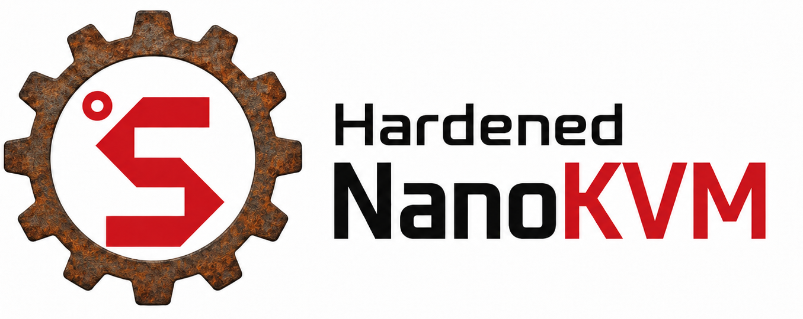

Hardened NanoKVM
A beta security fork for Sipeed NanoKVM focused on replacing the privileged Go web backend with a smaller Rust backend while keeping the existing hardware, web UI, native video pipeline, and service layout.
Current status
- Published application channel: Hardened Rust app 2.0.24.
- Current hardware test build: 2.0.25.
- Current raw/SD baseline: 0.2.15-raw.1.
- Raw system updates require physical SD-card recovery access.